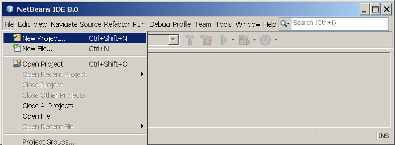
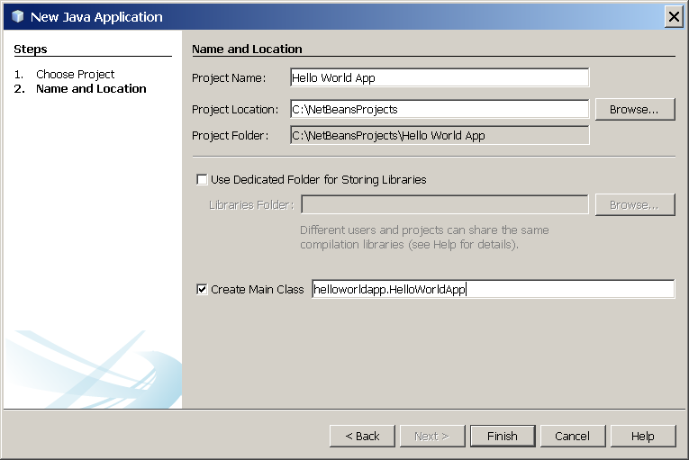
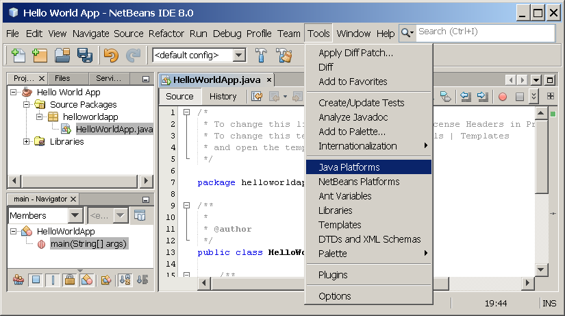

Lección: La Aplicación "¡Hola Mundo!"
"¡Hola Mundo!" para el EID Netbeans
¡Es hora de escribir su primera aplicación! Estas instrucciones detalladas son para los usuarios del EID NetBeans. El EID NetBeans se ejecuta sobre la plataforma Java, lo cual significa que puede usarlo con cualquier sistema operativo para el cual haya un KDJ disponible. Estos sistemas operativos incluyen Microsoft Windwos, Solaris OS, Linux, y Mac OS X.
Una Lista de Comprobación

Para escribir su primer programa, necesitará:
-
El Kit de Desarrollo del Java (El KDJ 7 ha sido seleccionado en este ejemplo)
- Para Microsoft Windows, Solaris OS, y Linux la página : Índice de Descargas Java SE
- Para Mac OS X: developer.apple.com
-
El EID NetBeans
- Para todas las plataformas: la página Índice de Descargas del EID NetBeans
Creando Su Primera Aplicación
Su primera aplicación, HolaMundoApl, simplemente visualizará el saludo "¡Hola Mundo!"
Para crear este programa, usted hará:
-
Crear un Proyecto en el EID
Cuando crea un proyecto en el EID, usted crea un entorno en el cual construir y ejecutar sus aplicaciones. Usando los proyectos del EID elimina problemas de configuración normalmente asociados con el desarrollo en la línea de comandos o consola. Puede construir o ejecutar sus aplicaciones elijiendo un item particular del menú de su EID.
-
Añadir Código al Fichero con Código Fuente Generado
Un fichero fuente contiene código, escrito en el lenguaje de programación Java, que usted y otros programadores pueden entender. Como parte de la creación de un proyecto del EID, un esqueleto de fichero fuente será automáticamente generado. Usted modificará el fichero fuente para añadir el mensaje "¡Hola Mundo!".
-
Compilar el Fichero Fuente y generar un fichero .class
El EID invoca el compilador del lenguaje de programación Java
(javac), el cual toma su fichero fuente y traduce su texto en instrucciones que la máquina virtual de Java puede entender. Las instrucciones contenidas en este fichero son conocidas como bytecodes. -
Ejecutar el Programa
El EID invoca la herramienta lanzadora de aplicaciones de Java (
java), la cual usa la máquina virtual de Java para ejecutar su aplicación.
Crear un Proyecto en el EID
Para crear un proyecto en el EID:
-
Lanzar el EID NetBeans.
-
En los sistemas Microsoft Windows, usted puede usarla entrada NetBeans IDE en el menú de Inicio.
-
En los sistemas Linux y Solaris OS, puede ejecutar el script lanzador del EIDE navegando al directorio
bindel EID y escribir./netbeans. -
En los sistemas Mac OS X, haga click en el icono de la aplicación NetBeans IDE.
-
-
En el EID NetBeans, elija File | New Project....

EID NetBeans con la entrada de Fichero | Nuevo Proyecto seleccionado.
-
En el asistente de New Project , expanda la categoría Java y seleecione Java Application como se muestra en la siguiente figura:

EID NetBeans , Asistente de Nuevo Proyecto, página de Elegir Proyecto.
-
En la página Name and Location del asistente, haga los siguiente (como se muestra en la figura de debajo):
-
En el campo Project Name , escriba
Hola Mundo Apl. -
En el campo Create Main Class , escriba
holaMundoApl.HolaMundoApl.

EID NetBeans , Asistente de Nuevo Proyecto, página de Nombre y Lugar.
-
-
Pulse el botón Finish.
El proyecto es creado y abierto en el EID. Usted debería ver los siguientes componentes:
-
La ventana Proyectos , la cual contiene una vista en árbol de los componentes del proyecto, incluyendo ficheros fuentes, librerías de las que su código depende, y demás.
-
La ventana del Editor de Código con un fichero llamado
HolaMundoApl.javaabierto. -
La ventana Navegador , la cual puede usar para navegar rápidamente entre los elementos de la clase seleccionada.

EID NetBeans con el proyecto HolaMundoApl abierto.
Añadir KDJ 8 a la Lista de Plataformas (si es necesario)
Puede ser necesario añadir el KDJ 8 a la lista de plataformas disponibles del EID. Para hacer esto, elija Tools | Java Platforms como se muestra en la siguiente figura:

Seleccionando el Gestor de Plataformas Java desde el Menu de Herramientas
Si usted no ve el KDJ 8 (el cual podría aparecer como 1.8 o 1.8.0) en la lista de plataformas instaladas, pulse Add Platform, navegue al directorio de instalación del KDJ 8, y pulse Finish. Usted debería ver ahora esta nueva plataforma añadida:

El Gestor de Plataformas Java
Para fijar este KDJ como el por defecto para todos los proyectos, usted puede ejecutar el EID con el switch
--jdkhome en la línea de comandos, o introduciendo el path al KDJ en la propiedad
netbeans_j2sdkhome de su fichero INSTALLATION_DIRECTORY/etc/netbeans.conf.
Para especificar este KDJ al proyecto actual sólo, seleccione Hola Mundo Apl en el panel Projects, eija File | Project Properties (Hola Mundo Apl), haga click sobre Libraries, entonces seleccione KDJ 1.8 en el menú desplegable Java Platform. Usted deberá ver una pantalla similar a la siguiente:

El EID está ahora configurado para KDJ 8.
Añadir Código al Fichero con Código Fuente Generado
Cuando creó este proyecto, uste dejó la casilla Create Main Class seleccionada en el asistente New Project. El EID, entonces, ha creado un esqueleto de clase para usted. Puede añadir el mensaje "¡Hola Mundo!" al esqueleto del código reemplazando la línea :
// TODO code application logic here
con la línea:
System.out.println("¡Hola Mundo!"); // Muestra la cadena.
Opcionalmente, usted puede reemplazar estas cuatro líneas de código generado:
/**
*
* @author
*/
con estas líneas
/**
* La clase HolaMundoApl implementa una aplicación que
* simplemente imprime "¡Hola Mundo!" a la salida estándar.
*
*/
Estas cuatro líneas son comentarios del código y no afectan a cómo el programa se ejecuta. En secciones posteriores de este tutorial explicaremos el uso y el formato de estos comentarios de código.
Sea Cuidadoso Cuando Usted Escriba

Nota: Escriba todo el código, comandos, y nombres de ficheros exactamente como es mostrado. Tanto el compilador(
javac) como el lanzador (java) son sensitivos-al-caso,
así que usted debe usar las mayúsculas consistentemente.
HolaMundoApl no es lo mismo que holamundoapl.
Salve sus cambios eligiendo File | Save.
El fichero debería parecerse a algo como lo siguiente:
/*
* To change this template, choose Tools | Templates
* and open the template in the editor.
*/
package holaMundoApl;
/**
* La clase HolaMundoApl implementa una aplicación que
* simplemente imprime "¡Hola Mundo!" a la salida estándar.
*/
class HolaMundoApl {
public static void main(String[] args) {
System.out.println("¡Hola Mundo!"); // Muestra la cadena.
}
}
Compilar el Fichero Fuente y generar un fichero .class
Para compilar su fichero fuente, elija Run | Build Project (Hola Mundo Apl) desde el menú principal del EID.
La ventana Output se abre y visualiza una salida similar a la que ve en la siguiente figura:

Ventana de Salida mostrando los resultados de construir el proyecto Hola Mundo Apl.
Si la salida de la construcción concluy con la sentencia BUILD SUCCESSFUL, ¡enhorabuena! ¡Usted ha
compilado con exito su programa!
Si la salida de la construcción concluye con la sentencia BUILD FAILED, usted probablemente tiene
un error de sintaxis en su código. Los errores son informados en la ventana Output como texto hiperenlazado.
Usted hace doble click sobre un hiperenlace para navegar a la fuente del error. Usted puede entonces corregir el
error y una vez de nuevo seleccionar Run | Build Project.
Cuando construye el proyecto, el fichero bytecode holaMundoApl.class es generado. Usted puede ver
donde el nuevo fichero es generado abriendo la ventana Files y expandiendo el nodo
Hola Mundo Apl/build/classes/holaMundoApl como es mostrado en la siguiente figura.

Ventana Ficheros. mostrando el fichero generado .class.
Ahora que usted ha construido el proyecto, puede ejecutar su programa.
Ejecutar el Programa
Desde la barra de menús del EID, elija Run | Run Main Project.
La siguiente figura muestra como debería verlo ahora.

El programa imprime ¡Hola Mundo! en la ventana Salida (junto con otra salida del script de construcción).
¡Enhorabuena! ¡Su programa funciona!
Continuar el Tutorial con el EID NetBeans
Las siguientes pocas páginas del tutorial le explicarán el código en esta simple aplicación. Después de eso, las lecciones irán introduciéndose en las capacidades principales del lenguaje y le ofrecerán muchos más ejemplos. Aunque el resto del tutorial no da instrucciones específicas sobre usar el EID Netbeans, usted puede facilmente usar el EID para escribir y ejecutar el código de ejemplo. Lo siguiente son consejos para usar el EID y explicaciones de algunos comportamientos del EIDE que le podría gustar ver:
-
Una vez ha creado un proyecto en el EID, puede añadir ficheros al proyecto usando el asistente New File . Elija File | New File, y entonces seleccione una plantilla en el asistente, como una plantilla de Fichero de Java Vacío.
-
Usted puede compilar y ejecutar ficheros individuales (en oposición al proyecto completo) usando los comandos del EID Compile File (F9) y Run File (Shift-F6). Si usa el comando Run Main Project , el EID ejecutará el fichero que el EID asocia con la clase main del proyecto principal. Así, si usted crea una clase adicional en su proyecto Hola Mundo Apl e intenta ejecutar ese fichero con el comando Run Main Project , el EID ejecutará el fichero
HolaMundoAplen vez de su fichero. -
Usted podría crear proyectos del EID separados para las aplicaciones de ejemplo que incluyen más de un fichero fuente.
-
Mientras usted escribe en el EID, una caja de asistencia de código podría aparecer periódicamente. Usted puede ignorar la caja de asistencia de código y seguir tecleando, o puede seleccionar una de las expresiones sugeridas. Si uste prefiere que no aparezca automáticamente la caja de asistencia de código, puede desactivar la funcionalidad. Elija Tools | Options | Editor, pulse la pestaña Code Completion y desactive la casilla Auto Popup Completion Window.
-
Si usted quiere renombrar el nodo para un fichero fuente en la ventana Projects, elija Refactor desde el menú prinicipal del EID. El EID le preguntará con el cuadro de diálogo de Rename para guiarle a través de las opciones de renombrado de la clase y la actualización del código al que se refiere a esa clase. Haga los cambios y pulse Refactor para aplicar los cambios. Esta secuencia de pulsaciones puede parecer innecesaria si usted tiene sólo una clase en su proyecto, pero es muy útil cuando sus cambios afectan a otras partes de su código en proyectos más grandes.
-
Para una guía más completa de las características del EID NetBeans, vea la página de Documentación de NetBeans .